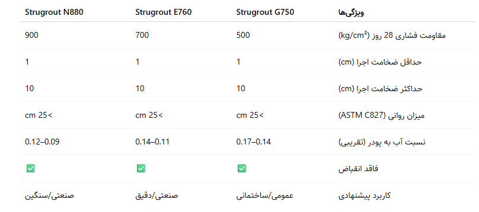

راهنمای جامع گروتهای پایه سیمانی - نقش کلیدی گروت در نصب تجهیزات و افزایش دوام سازهها
مقدمه
گروتها یکی از مصالح پُراهمیت اما کمتر شناختهشده در ساختوساز مدرن هستند. این مواد که برای پر کردن فضاهای خالی، انتقال بار و تثبیت قطعات در سازهها مورد استفاده قرار میگیرند، نقشی حیاتی در پایداری، دوام و ایمنی سازهها ایفا میکنند. بهویژه در محلهایی مانند زیر صفحه ستون، اطراف بولتها، پایه تجهیزات صنعتی، سازههای دریایی و قطعات پیشساخته بتنی، گروت به عنوان تنها گزینه قابل اعتماد مطرح میشود.
در این مقاله، ابتدا به بررسی ویژگیها و اهمیت گروتهای پایه سیمانی میپردازیم و سپس سه محصول تخصصی برند Strumix شامل Strugrout G750، Strugrout E760 و Strugrout N880 را به عنوان نمونههای واقعی و قابل استناد، مورد تحلیل قرار میدهیم.
گروت پایه سیمانی چیست؟
گروت سیمانی مادهای است روان و پرکننده، متشکل از سیمان پرتلند، سنگدانههای ریزدانه، فیلرهای معدنی و افزودنیهای شیمیایی (مانند روانکنندهها، پایدارکنندهها و منبسطکنندهها) که برای پر کردن دقیق فضاهای خالی و شکافها در سازهها مورد استفاده قرار میگیرد.
ویژگی کلیدی گروتهای با کیفیت شامل:
- روانی بالا بدون جداشدگی سنگدانه
- چسبندگی قوی به فلز و بتن
- مقاومت فشاری بالا در سنین اولیه و نهایی
- انبساط کنترلشده برای پر کردن کامل فضا
- عدم وجود یون کلر جهت جلوگیری از خوردگی
عوامل کلیدی در انتخاب گروت مناسب
انتخاب گروت به پارامترهای زیر وابسته است:
✅ ضخامت فضای مورد پر کردن
✅ نیروی وارد بر محل گروتریزی (بار استاتیکی یا دینامیکی)
✅ شرایط محیطی (خشک، مرطوب، خورنده، دریایی)
✅ لزوم مقاومت اولیه بالا یا اجرای سریع
✅ محدودیتهای اجرایی مانند دسترسی، دمای محیط، زمان کارپذیری
مروری بر محصولات Strumix
شرکت Strumix با بهرهگیری از دانش فنی مهندسی و آزمایشگاههای تخصصی، سه نوع گروت سیمانی متنوع را برای پاسخگویی به نیازهای مختلف پروژههای ساختمانی و صنعتی توسعه داده است. در ادامه، به معرفی مشخصات و کاربردهای هرکدام میپردازیم:
1. Strugrout G750
گروت پایه سیمانی ریزدانه و عمومی با مقاومت بالا
🔹 روانی بالا و خودمتراکم
🔹 مقاومت فشاری 500 kg/cm² در 28 روز
🔹 مناسب برای ضخامت 1 تا 10 سانتیمتر
🔹 قابل استفاده در پروژههای ساختمانی، نصب بیسپلیت، بولت، راد، قطعات پیشساخته و ماشینآلات معمولی
🔹 مطابق با استاندارد ASTM C1107
نکته فنی:
این گروت انتخاب مناسبی برای پروژههایی است که روانی بالا و عملکرد عمومی با هزینه اقتصادی اهمیت دارند.
2. Strugrout E760
گروت تخصصی با دانهبندی بسیار ریز و انبساط کنترلشده
🔹 طراحیشده برای اجرای دقیق و یکنواخت در ضخامتهای کم
🔹 مقاومت فشاری بالا تا 700 kg/cm²
🔹 بدون ترکخوردگی و انقباض
🔹 مناسب برای نصب تجهیزات دقیق مانند پمپ، توربین، ژنراتور و دستگاههای با لرزش بالا
🔹 امکان پمپپذیری برای فضاهای محدود
نکته فنی:
در شرایطی که کنترل ضخامت، تراکم، روانی و انبساط اهمیت دارد، E760 یک گزینه مهندسی و حرفهای است.
3. Strugrout N880
گروت بدون انقباض با مقاومت بسیار بالا
🔹 مقاومت فشاری تا 900 kg/cm²
🔹 فاقد انقباض، بدون ترک، با انبساط حجمی مناسب
🔹 طراحیشده برای پروژههای سنگین صنعتی، پایه ماشینآلات حجیم، سکوهای دریایی، تاسیسات نفت و گاز
🔹 مناسب برای شرایط بارگذاری سنگین و محیطهای خورنده
نکته فنی:
N880 گزینهای ایدهآل برای پروژههایی است که نیاز به مقاومت نهایی بسیار بالا و دوام طولانی دارند. با این حال، روانی کمتری نسبت به G750 دارد و برای نصب با دقت بالا نیازمند کنترل اجراست.
جدول مقایسه فنی محصولات

- آمادهسازی سطح زیرکار: سطح باید تمیز، اشباع از آب (بدون آب آزاد) و عاری از هرگونه چربی، گردوغبار یا مواد جداکننده باشد.
- اختلاط مناسب: آب باید دقیقاً طبق دستورالعمل با پودر ترکیب شود. از میکسر یا همزن مناسب استفاده شود.
- ریختن از یک سمت: گروت باید از یک جهت ریخته یا پمپ شود تا هوای محبوس باقی نماند.
- عملآوری مرطوب: برای جلوگیری از خشک شدن سریع، گروت باید تا 5 تا 7 روز مرطوب نگه داشته شود.
- عدم استفاده در ضخامت کمتر از 1 سانتیمتر: برای گروتهای پایه سیمانی، ضخامت کمتر از این مقدار ریسک ترکخوردگی دارد.
جمعبندی
گروت سیمانی، اگر به درستی انتخاب و اجرا شود، تضمینکننده عملکرد صحیح تجهیزات سازهای و صنعتی در بلندمدت است. استفاده از محصولات استاندارد مانند G750، E760 و N880 به مهندسان و مجریان این اطمینان را میدهد که تمامی الزامات فنی از جمله مقاومت، چسبندگی، روانی و دوام رعایت شدهاند.
شرکت Strumix با ارائه طیفی از گروتهای تخصصی، امکان انتخاب بهینه برای شرایط مختلف پروژه را فراهم کرده و در کنار آن، پشتیبانی فنی دقیق نیز ارائه میدهد.
بهترین مطالب هر ما
ارسال میشه به صندوق پستی شما!
این بالا کلیک کن و ایمیلت رو بنویس
ثبت